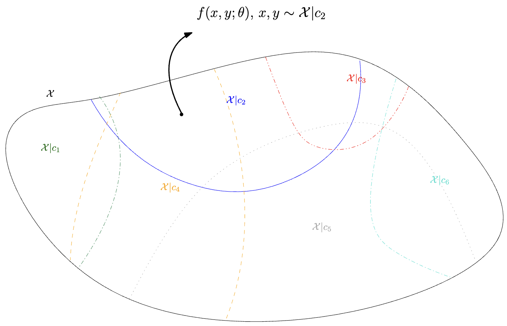
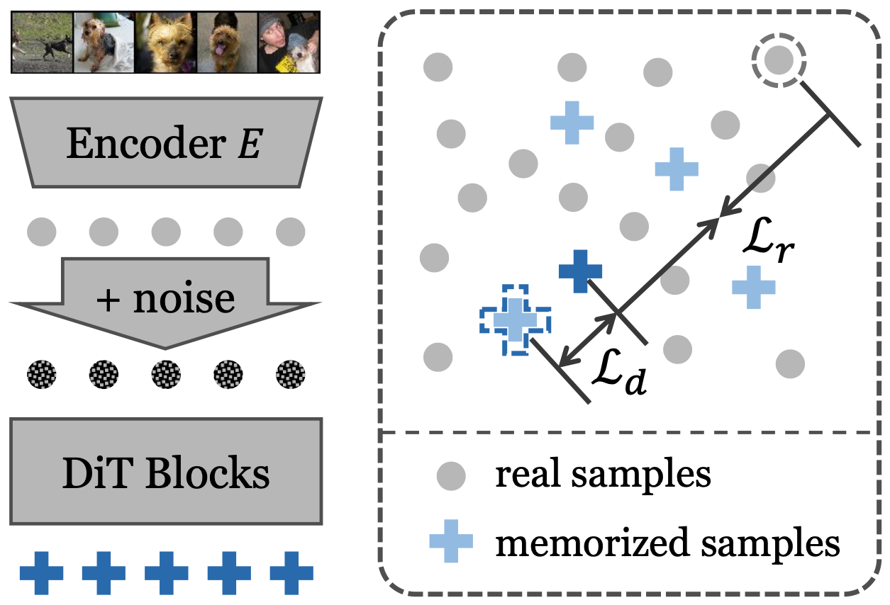
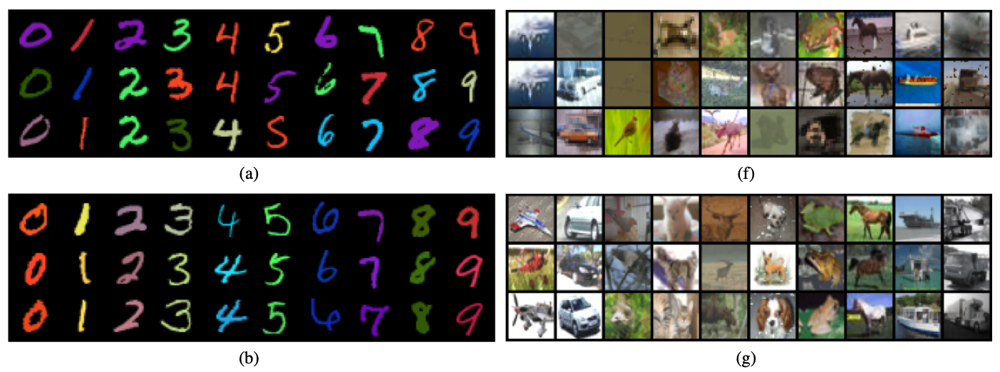
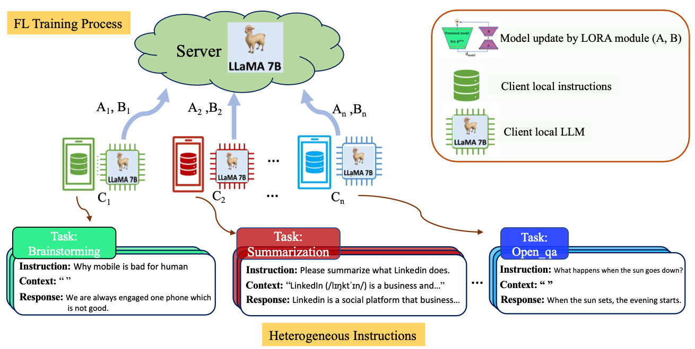
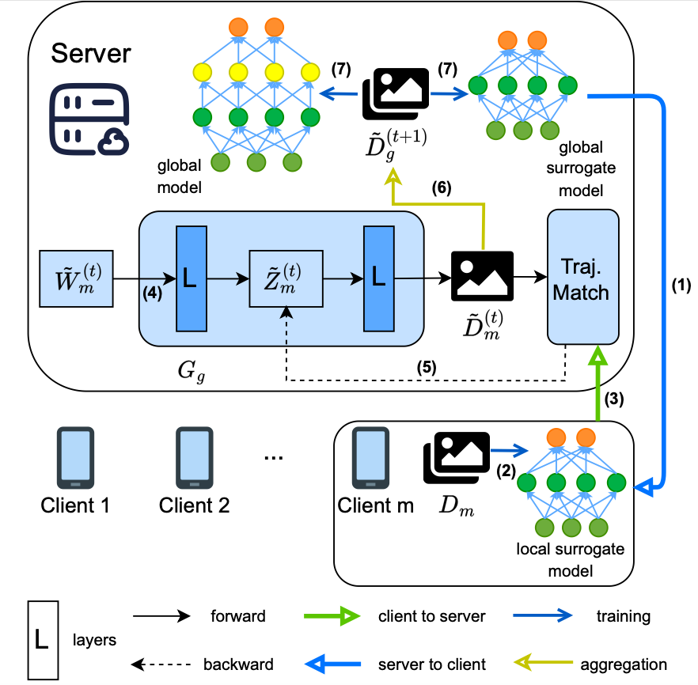
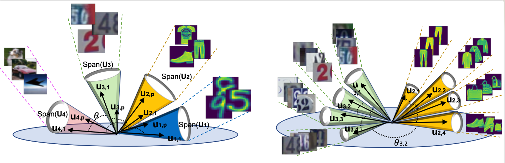
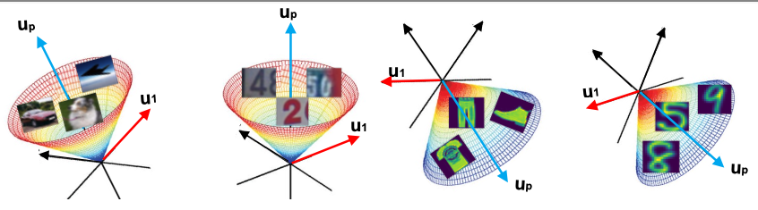
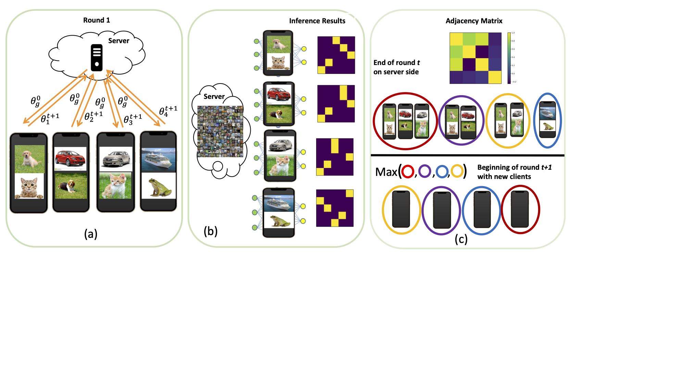
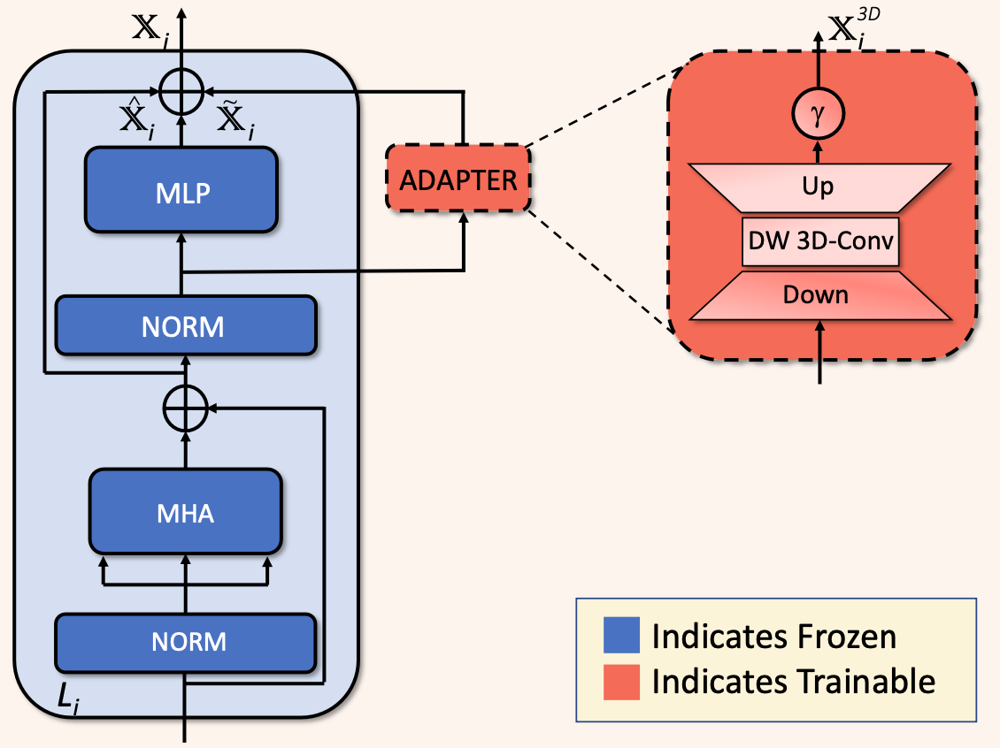

Saeed Vahidian
saeed.vahidian_at_duke_dot_edu

|
Google Scholar |
LinkedIn|
|
I am a postdoctoral researcher at Duke University, working with Prof. Yiran Chen.
Previously, I got my Ph.D. from the Department of Electrical and Computer Engineering at the University of California San Diego (UCSD), where I was supervised by Prof. Bill Lin.
My research primarily revolves around Information Core Extraction (ICE), which focuses on extracting the most information core (synthetic data) from vast, redundant datasets, and Resilient Learning Structures (RLS), which ensure robustness, scalability, efficiency, and generalization when models are trained on these synthetic data.
In addition, I worked on Distributed Data Fusion (DDF), the framework that enables learning by synthesizing data from diverse sources into a cohesive structure, allowing for more effective model training.
|
Experience
|
Duke University
Postdoctoral Scholar
April 2023 - Present
|

UC San Diego
PhD studies
Sep 2018 - Apr 2023
|
Internship
ML Researcher
Summer 2021
|
Invited for Collaboration on DDF project
2022
|
Research Collaboration
2018 - 2019
|

Research Collaboration
2014 - 2016
|
News
- [02/2024] One paper was accepted to ECCV 2024.
- [02/2024] Chair in CVPR 2024. I hold the first workshop on Dataset Distillation for Computer Vision at CVPR, 2024.
|
| 2024 |
|

|
Group Distributionally Robust Dataset Distillation with Risk Minimization
Saeed Vahidian, Mingyu Wang, Jianyang Gu, Vyacheslav Kungurtsev, Wei Jiang and Yiran Chen
NeurIPS 2024
paper |
bibtex |
code and webpage |
@Article{SVahidian-RobustDD,
author = {Saeed Vahidian and
Mingyu Wang and
Jianyang Gu and
Vyacheslav Kungurtsev and
Wei Jiang and
Yiran Chen},
title = {Group Distributionally Robust Dataset Distillation with Risk Minimization},
journal = {CoRR},
volume = {abs/2402.04676},
year = {2024},
url = {https://doi.org/10.48550/arXiv.2402.04676},
doi = {10.48550/ARXIV.2402.04676},
eprinttype = {arXiv}}
|
|
Dataset Distillation from First Principles: Integrating Core Information Extraction and Purposeful Learning
Vyacheslav Kungurtsev, Yuanfang Peng, Jianyang Gu, Saeed Vahidian, Anthony Quinn, Fadwa Idlahcen, Yiran Chen
Journal of Machine Learning Research 2024
paper |
bibtex |
code and webpage |
@Article{SVahidian-ICEPL-2024,
title={Dataset Distillation from First Principles: Integrating Core Information Extraction and Purposeful Learning},
author={Vyacheslav Kungurtsev and Yuanfang Peng and Jianyang Gu and Saeed Vahidian and Anthony Quinn and Fadwa Idlahcen and Yiran Chen},
year={2024},
eprint={2409.01410},
archivePrefix={arXiv},
url={https://arxiv.org/abs/2409.01410}}
|

|
Efficient dataset distillation via minimax diffusion
Jianyang Gu, Saeed Vahidian, Vyacheslav Kungurtsev, Haonan Wang, Wei Jiang, Yang You, Yiran Chen
CVPR 2024
paper |
bibtex |
code and webpage |
@Article{SVahidian-minmax-Diffusion2024,
title={Efficient dataset distillation via minimax diffusion},
author={Gu, Jianyang and Vahidian, Saeed and Kungurtsev, Vyacheslav and Wang, Haonan and Jiang, Wei and You, Yang and Chen, Yiran},
booktitle={Proceedings of the IEEE/CVF Conference on Computer Vision and Pattern Recognition},
pages={15793--15803},
year={2024}
}
|

|
Exploring the Impact of Dataset Bias on Dataset Distillation
Yao Lu, Jianyang Gu, Xuguang Chen, Saeed Vahidian, Qi Xuan
CVPR 2024
paper |
bibtex |
code and webpage |
@Article{SVahidian-BiasedDD2024,
author = {Yao Lu and
Jianyang Gu and
Xuguang Chen and
Saeed Vahidian and
Qi Xuan},
title = {Exploring the Impact of Dataset Bias on Dataset Distillation},
journal = {CoRR},
volume = {abs/2403.16028},
year = {2024},
url = {https://doi.org/10.48550/arXiv.2403.16028},
doi = {10.48550/ARXIV.2403.16028},
eprinttype = {arXiv},
eprint = {2403.16028},
timestamp = {Tue, 09 Apr 2024 15:12:39 +0200},
biburl = {https://dblp.org/rec/journals/corr/abs-2403-16028.bib},
bibsource = {dblp computer science bibliography, https://dblp.org}
}
|

|
Towards building the federatedGPT: Federated instruction tuning
Saeed Vahidian, Jianyi Zhang, Martin Kuo, Chunyuan Li, Ruiyi Zhang, Tong Yu, Guoyin Wang, Yiran Chen
ICASSP 2024
paper |
bibtex |
code and webpage |
@Article{SVahidian-FedGPT2024,
title={Towards Building the Federated GPT: Federated Instruction Tuning},
author={Jianyi Zhang and Saeed Vahidian and Martin Kuo and Chunyuan Li and Ruiyi Zhang and Guoyin Wang and Yiran Chen},
year={2023},
eprint={2305.05644},
archivePrefix={arXiv},
primaryClass={cs.CL}}
|
|

|
Unlocking the potential of federated learning: The symphony of dataset distillation via deep generative latents
Saeed Vahidian, Yuqi Jia, Jingwei Sun, Jianyi Zhang, Vyacheslav Kungurtsev, Neil Zhenqiang Gong, Yiran Chen
ECCV 2024
paper |
bibtex |
code and webpage |
@Article{SVahidian-DDF-ECCV2024,
title={Unlocking the Potential of Federated Learning: The Symphony of Dataset Distillation via Deep Generative Latents},
author={Yuqi Jia and Saeed Vahidian and Jingwei Sun and Jianyi Zhang and Vyacheslav Kungurtsev and Neil Zhenqiang Gong and Yiran Chen},
year={2023},
eprint={2312.01537},
archivePrefix={arXiv},
primaryClass={cs.LG},
url={https://arxiv.org/abs/2312.01537}}
|
| 2023 |

|
When do curricula work in federated learning?
Saeed Vahidian, Sreevatsank Kadaveru, Woonjoon Baek, Weijia Wang, Vyacheslav Kungurtsev, Chen Chen, Mubarak Shah, Bill Lin
ICCV 2023
paper |
bibtex |
code and webpage |
@Article{SVahidian-DDF-ICCV2023,
author = {Saeed Vahidian and
Sreevatsank Kadaveru and
Woonjoon Baek and
Weijia Wang and
Vyacheslav Kungurtsev and
Chen Chen and
Mubarak Shah and
Bill Lin},
title = {When Do Curricula Work in Federated Learning?},
booktitle = {{IEEE/CVF} International Conference on Computer Vision, {ICCV} 2023,
Paris, France, October 1-6, 2023},
pages = {5061--5071},
publisher = {{IEEE}},
year = {2023}}
|
|

|
Efficient Distribution Similarity Identification in Clustered Federated Learning via Principal Angles Between Client Data Subspaces
Saeed Vahidian, Mahdi Morafah, Weijia Wang, Vyacheslav Kungurtsev, Chen Chen, Mubarak Shah, Bill Lin
AAAI 2023
paper |
bibtex |
code and webpage |
@Article{SVahidian-DDF-AAAI2023,
author = {Saeed Vahidian and
Mahdi Morafah and
Weijia Wang and
Vyacheslav Kungurtsev and
Chen Chen and
Mubarak Shah and
Bill Lin},
editor = {Brian Williams and
Yiling Chen and
Jennifer Neville},
title = {Efficient Distribution Similarity Identification in Clustered Federated
Learning via Principal Angles between Client Data Subspaces},
booktitle = {Thirty-Seventh {AAAI} Conference on Artificial Intelligence, {AAAI}
2023, Thirty-Fifth Conference on Innovative Applications of Artificial
Intelligence, {IAAI} 2023, Thirteenth Symposium on Educational Advances
in Artificial Intelligence, {EAAI} 2023, Washington, DC, USA, February
7-14, 2023},
pages = {10043--10052},
publisher = {{AAAI} Press},
year = {2023}}
|
|

|
Rethinking data heterogeneity in federated learning: Introducing a new notion and standard benchmarks
Saeed Vahidian, Mahdi Morafah, Chen Chen, Mubarak Shah, Bill Lin
IEEE Transaction on AI 2023
paper |
bibtex |
code and webpage |
@Article{SVahidian-DDF-AAAI2023,
author = {Saeed Vahidian and
Mahdi Morafah and
Weijia Wang and
Vyacheslav Kungurtsev and
Chen Chen and
Mubarak Shah and
Bill Lin},
editor = {Brian Williams and
Yiling Chen and
Jennifer Neville},
title = {Efficient Distribution Similarity Identification in Clustered Federated
Learning via Principal Angles between Client Data Subspaces},
booktitle = {Thirty-Seventh {AAAI} Conference on Artificial Intelligence, {AAAI}
2023, Thirty-Fifth Conference on Innovative Applications of Artificial
Intelligence, {IAAI} 2023, Thirteenth Symposium on Educational Advances
in Artificial Intelligence, {EAAI} 2023, Washington, DC, USA, February
7-14, 2023},
pages = {10043--10052},
publisher = {{AAAI} Press},
year = {2023}}
|
|

|
Flis: Clustered federated learning via inference similarity for non-iid data distribution
Saeed Vahidian, Mahdi Morafah, Weijia Wang, Bill Lin
NeurIPS 2023
paper |
bibtex |
code and webpage |
@Article{SVahidian-DDF-OJCS2023,
author={Morafah, Mahdi and Vahidian, Saeed and Wang, Weijia and Lin, Bill},
journal={IEEE Open Journal of the Computer Society},
title={FLIS: Clustered Federated Learning Via Inference Similarity for Non-IID Data Distribution},
year={2023},
volume={4},
number={},
pages={109-120}}
|
|

|
CEFHRI: A Communication Efficient Federated Learning Framework for Recognizing Industrial Human-Robot Interaction
Umar Khalid, Hasan Iqbal, Saeed Vahidian, Jing Hua, Chen Chen
IEEE International Conference on Intelligent Robots and Systems (IROS) 2023
paper |
bibtex |
code and webpage |
@Article{SVahidian-DDF-IROS2023,
author = {Umar Khalid and
Hasan Iqbal and
Saeed Vahidian and
Jing Hua and
Chen Chen},
title = {{CEFHRI:} {A} Communication Efficient Federated Learning Framework
for Recognizing Industrial Human-Robot Interaction},
booktitle = {{IROS}},
pages = {10141--10148},
year = {2023},
url = {https://doi.org/10.1109/IROS55552.2023.10341467}}
|
| 2022 and before |

|
Coresets for estimating means and mean square error with limited greedy samples
Saeed Vahidian, Baharan Mirzasoleiman, Alexander Cloninger
UAI 2020
paper |
bibtex |
code and webpage |
@Article{SVahidian-ICE-UAI2023,
author = {Saeed Vahidian and
Baharan Mirzasoleiman and
Alexander Cloninger},
title = {Coresets for Estimating Means and Mean Square Error with Limited Greedy
Samples},
booktitle = {Proceedings of the Thirty-Sixth Conference on Uncertainty in Artificial
Intelligence, {UAI} 2020, virtual online, August 3-6, 2020},
series = {Proceedings of Machine Learning Research},
volume = {124},
pages = {350--359},
publisher = {{AUAI} Press},
year = {2020}}
|
|
|
Personalized federated learning by structured and unstructured pruning under data heterogeneity
Saeed Vahidian, Mahdi Morafah, Bill Lin
IEEE ICDCSW 2021
paper |
bibtex |
code and webpage |
@Article{SVahidian-DDF-IROS2023,
author = {Umar Khalid and
Hasan Iqbal and
Saeed Vahidian and
Jing Hua and
Chen Chen},
title = {{CEFHRI:} {A} Communication Efficient Federated Learning Framework
for Recognizing Industrial Human-Robot Interaction},
booktitle = {{IROS}},
pages = {10141--10148},
year = {2023},
url = {https://doi.org/10.1109/IROS55552.2023.10341467}}
|
|
|
Select to better learn: Fast and accurate deep learning using data selection from nonlinear manifolds
Mohsen Joneidi, Saeed Vahidian, Ashkan Esmaeili, Weijia Wang, Nazanin Rahnavard, Bill Lin, Mubarak Shah
CVPR 2020
paper |
bibtex |
code and webpage |
@Article{SVahidian-ICE-CVPR2020,
author = {Mohsen Joneidi and
Saeed Vahidian and
Ashkan Esmaeili and
Weijia Wang and
Nazanin Rahnavard and
Bill Lin and
Mubarak Shah},
title = {Select to Better Learn: Fast and Accurate Deep Learning Using Data
Selection From Nonlinear Manifolds},
booktitle = {2020 {IEEE/CVF} Conference on Computer Vision and Pattern Recognition,
{CVPR} 2020, Seattle, WA, USA, June 13-19, 2020},
pages = {7816--7826},
publisher = {Computer Vision Foundation / {IEEE}},
year = {2020}}
|
|
|
Unsupervised Meta-Learning through Latent-Space Interpolation in Generative
Models
Siavash Khodadadeh, Sharare Zehtabian, Saeed Vahidian, Weijia Wang, Bill Lin, Ladislau Boloni
ICLR 2020
paper |
bibtex |
code and webpage |
@Article{SVahidian-Meta-ICLR2020,
@article{DBLP:journals/corr/abs-2006-10236,
author = {Siavash Khodadadeh and
Sharare Zehtabian and
Saeed Vahidian and
Weijia Wang and
Bill Lin and
Ladislau B{\"{o}}l{\"{o}}ni},
title = {Unsupervised Meta-Learning through Latent-Space Interpolation in Generative
Models},
journal = {CoRR},
volume = {abs/2006.10236},
year = {2020},
url = {https://arxiv.org/abs/2006.10236}}
|
| | | |
Service
- Reviewer: ICML, NeurIPS, CVPR, AAAI, IROS, ICRA, SIGGRAPH, and the Machine Learning Journal.
|
|
{kind=link}
{kind=link}